JUNCTIONEER · PRESERVED CHECKPOINT 01 / 保留的視覺檢查點
A little railway, ready for review.
Actual in-engine playthrough / 實際遊玩錄影
A 31-second recording showing a blocked route, retained-setting retry and successful station arrival. Original evidence, without regeneration.
Desktop and mobile screenshots / 桌機與行動版畫面
Open any image to inspect it at full resolution. Screenshots preserve the original checkpoint.

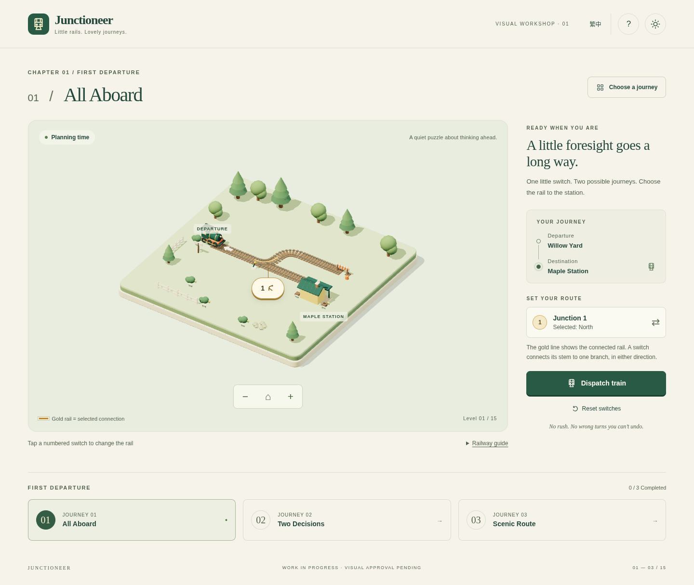

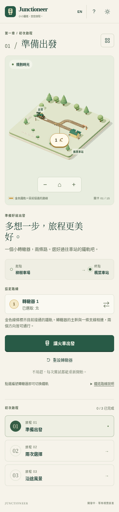

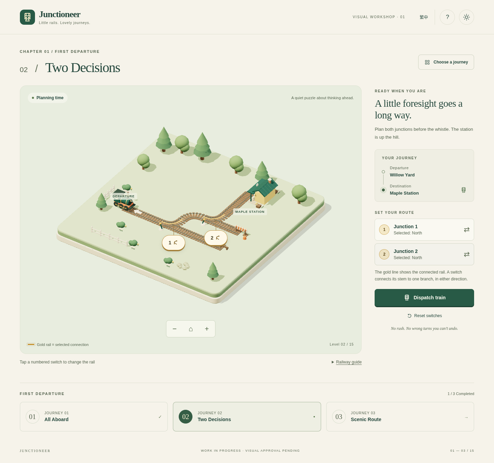

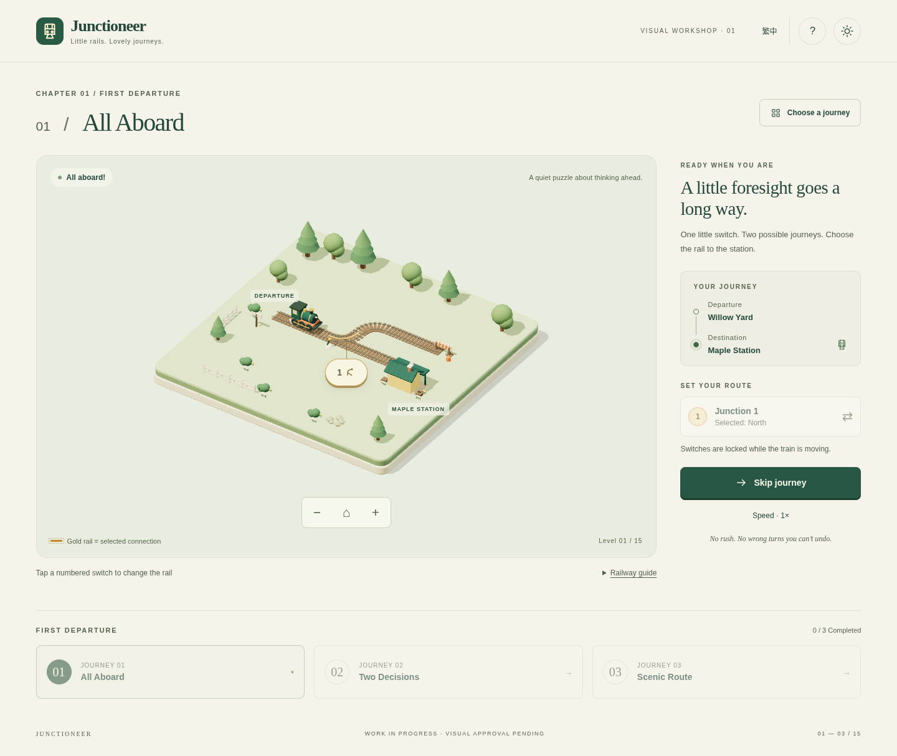

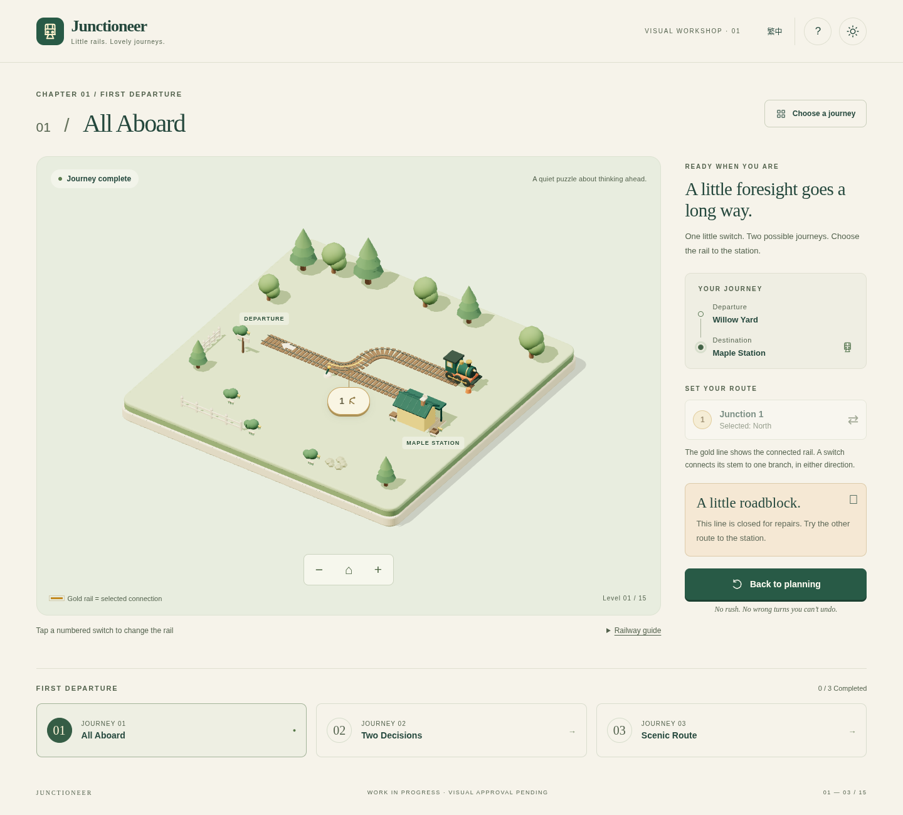

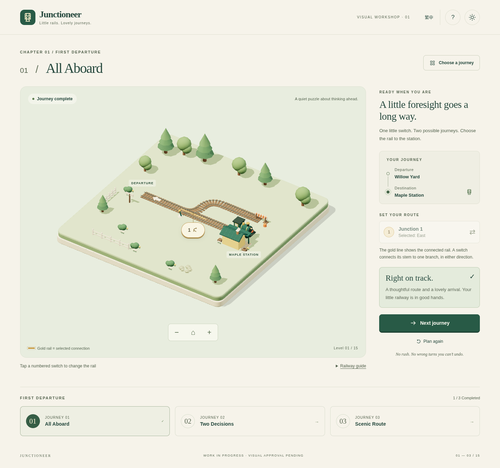

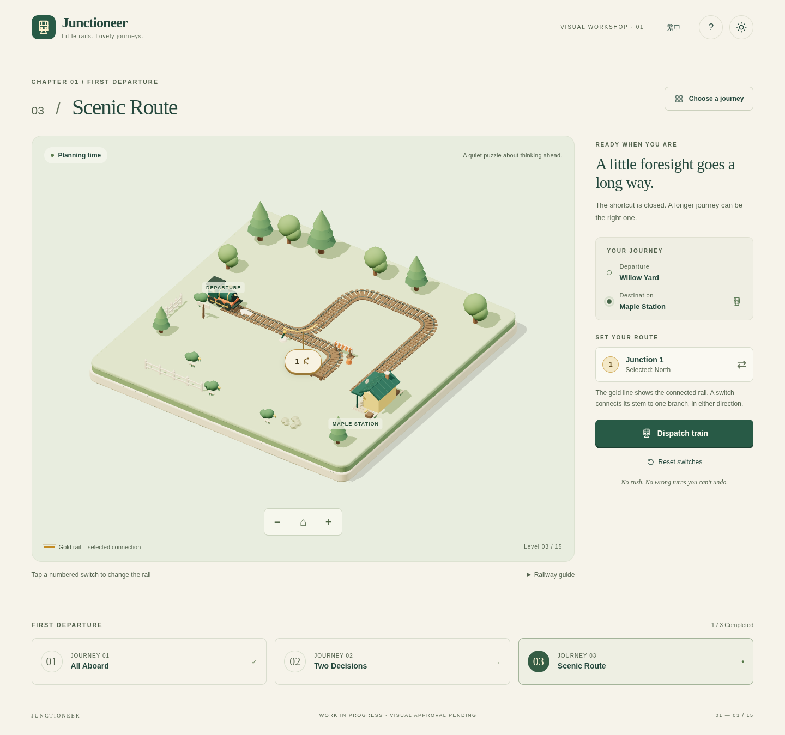

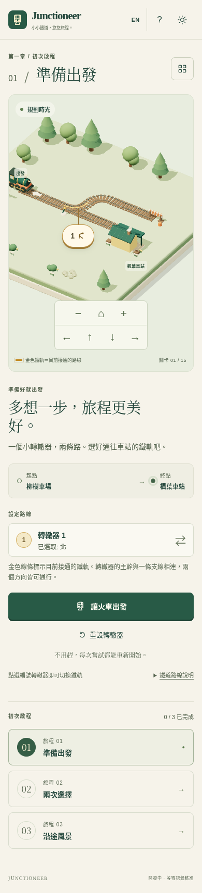

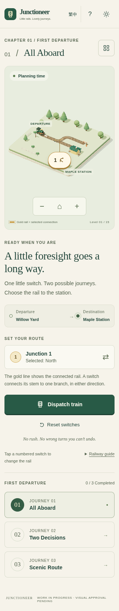

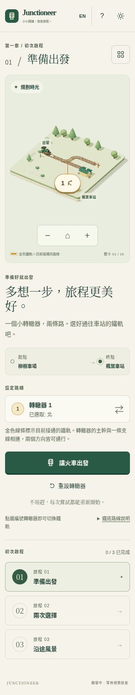

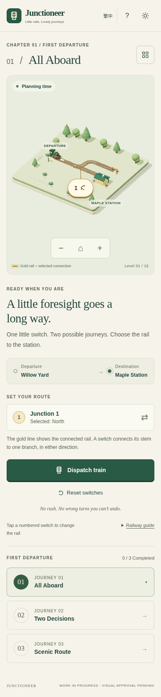

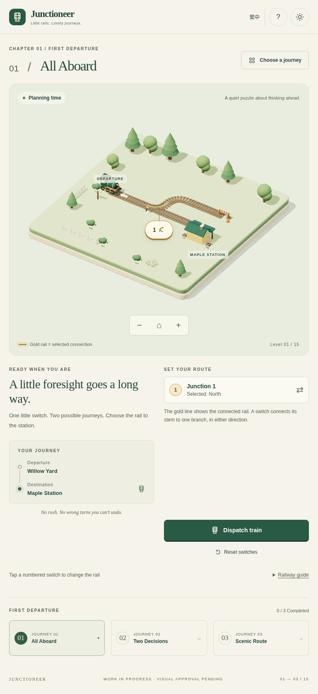

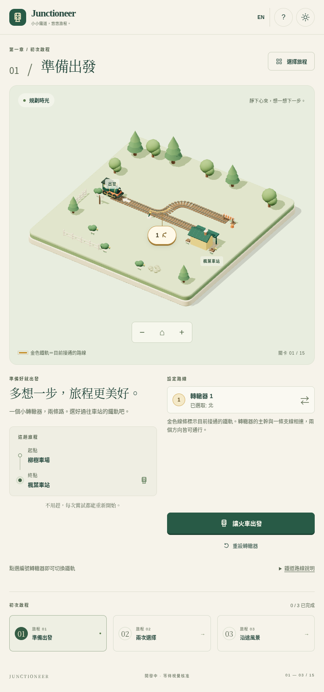

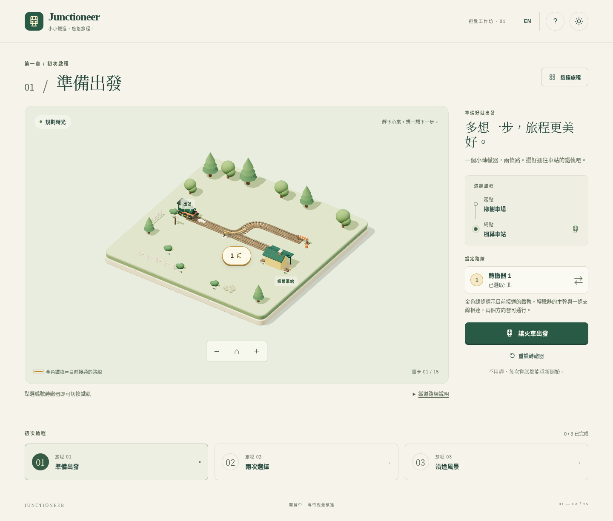
Evidence identity / 證據識別
Original source commit: 95711eaeaf4d43b5cf8e19439f73e5eea629b274. The original QA report is historical: its pending gameplay-decision and deployment statements are superseded by the current decision/deployment records. Physical-device and independent-player tests remain unperformed.